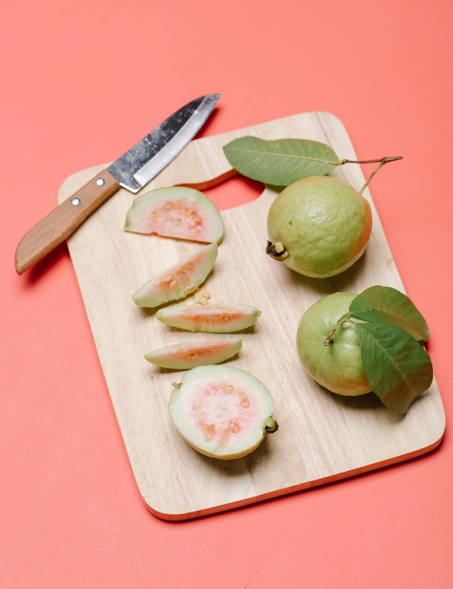
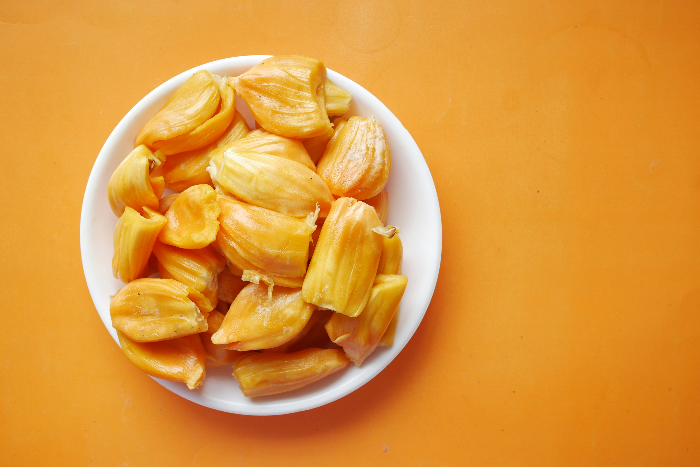
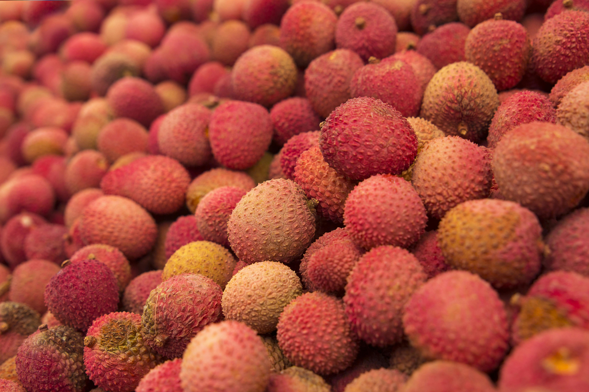

Seasonal Diseases
here is works

তরমুজ
- গরমে শরীর ঠাণ্ডা রাখে।
- পানিশূন্যতা দূর করে।
- কিডনি পরিষ্কারে সহায়ক।
Precaution: পরিমিত মাত্রায় খাওয়া উচিত, অতিরিক্ত তরমুজ খেলে পেট খারাপ হতে পারে।

পেয়ারা
- ভিটামিন C-এ ভরপুর।
- রোগ প্রতিরোধ ক্ষমতা বাড়ায়।
- ঠান্ডা-সর্দি প্রতিরোধে কার্যকর।
Precaution: খাওয়ার আগে ভালোভাবে ধুয়ে নিতে হবে যাতে ব্যাকটেরিয়া বা কীটপতঙ্গ না থাকে।

আম
- ভিটামিন A ও C সমৃদ্ধ।
- ত্বক ও চোখের জন্য ভালো।
- শক্তি ও রোগ প্রতিরোধ ক্ষমতা বাড়ায়।
Precaution: ডায়াবেটিক রোগীরা পরিমাণ বুঝে আম খাওয়া উচিত, কারণ এতে চিনি থাকে।

কাঁঠাল
- ফাইবার ও ভিটামিন C সমৃদ্ধ।
- হজমে সহায়ক।
- রক্তশূন্যতা কমাতে সাহায্য করে।
Precaution: কিছু লোকের ক্ষেত্রে কাঁঠালে অ্যালার্জি হতে পারে, প্রথমবার খাওয়ার সময় সতর্ক থাকুন।

লিচু
- উচ্চ অ্যান্টি-অক্সিডেন্ট।
- রক্ত বিশুদ্ধ করতে সাহায্য করে।
- ত্বকের জন্য উপকারী।
Precaution: বেশি পরিমাণে খেলে পেটের সমস্যা হতে পারে, বিশেষ করে ঠাণ্ডা অবস্থায় সতর্ক থাকুন।

পেঁপে
- হজমে সাহায্য করে।
- লিভার পরিষ্কারে কার্যকর।
- ভিটামিন A ও C সমৃদ্ধ।
Precaution: কাঁচা পেঁপে বেশি খাওয়া থেকে বিরত থাকুন, কারণ তা হজমের সমস্যা বাড়াতে পারে।